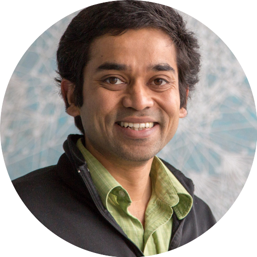

Keynote Talks
Vision talks from leading researchers.
Geometry, Learning, and Shape Modeling — Edinburgh
An international workshop exploring the future of shape modeling at the intersection of geometry, design, and AI.
Advances in geometry processing, machine learning, and design are rapidly expanding shape modeling beyond traditional CAD.
This workshop brings together leading researchers across graphics, geometry, and AI to explore the next generation of shape modeling—from neural representations to human-AI co-creation and next-generation CAD systems.
Vision talks from leading researchers.
Short presentations on recent trends.
Informal discussions on key challenges and directions.
Connect and build new collaborations.

University College London
Tsinghua University
Brown University
Brown University
University of Cambridge

Huawei Edinburgh
Autodesk Research / UCL
Adobe Research
University of Edinburgh
Inria
University of Edinburgh